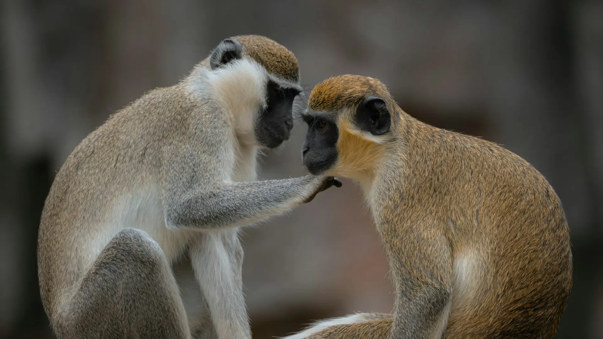

Projetos de conservação
Conheça as iniciativas fictícias da Animais a Salvo voltadas à proteção da fauna silvestre e à educação ambiental.

Projeto destaque
Guardiões do Mico-Leão-Dourado
Uma iniciativa fictícia de conscientização sobre a importância da preservação do mico-leão-dourado, símbolo da fauna brasileira e da Mata Atlântica.
Objetivos do projeto
- Divulgar informações sobre a espécie e seu papel ecológico;
- Incentivar a preservação da Mata Atlântica;
- Promover ações educativas em escolas e comunidades;
- Estimular o voluntariado em causas ambientais.
Como participar
Você pode contribuir como voluntário em ações educativas, ajudar na divulgação nas redes sociais ou apoiar iniciativas de conservação da fauna.
Atenção: este projeto é fictício e faz parte de uma atividade acadêmica. Nenhuma doação real está sendo solicitada.
Como atuar como voluntário
O voluntariado é uma das formas mais diretas de contribuir com a causa ambiental. Veja as etapas:
- Escolha uma das frentes de atuação (educação, divulgação ou conservação);
- Preencha o formulário de cadastro em nossa página;
- Aguarde o contato da equipe fictícia da ONG;
- Participe de ações de conscientização e educação ambiental.
Faça parte da mudança
Quero participar
Junte-se a nós em defesa da fauna.
Cadastre-se como voluntário e ajude a espalhar a importância da preservação ambiental.